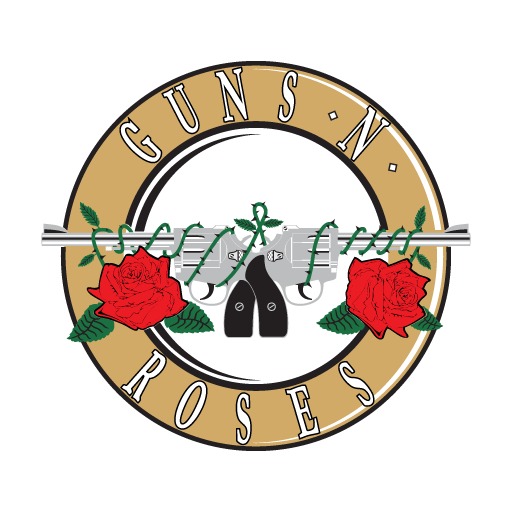

Tributo a los Guns and Roses
La historia de los Guns N’ Roses, uno de los mejores grupos de la escena musical de los 80’ y la última gran banda del hard rock, comienza en realidad en los años 70’ en el pequeño pueblo de Laffayette, Indiana, Estados Unidos. William “Bill” Bailey, un iracundo adolescente que a los cinco años cantaba en el coro de la iglesia y se destacaba por su impresionante rango vocal y un gran dominio del falsete, y que deseaba escapar a su destino de trabajador asalariado, conoció en el colegio a Jeffrey Dean Isbell, otro joven que parecía compartir sus intereses musicales.
